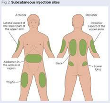

Palliative care is defined as the prevention and relief of suffering of patients facing a life-threatening illness (including those who may recover). It enhances quality of life, promotes dignity and comfort and may also positively influence the course of illness.
Palliative care is not only started when all active care is stopped but rather it is applicable early in the course of illness in conjunction with other therapies intended to prolong life. It should be integrated with prevention, early diagnosis and treatment of serious or life-limiting health problems at all levels of any health system.
There is currently no cure for COVID-19 and patients may well present very unwell with rapid deteriorations. As such, you will never be wrong to consider patients with a palliative approach of managing symptoms and making them as comfortable as possible whether it is for the last hours of life, the last days or, in fact, until they make a recovery.
WHO state that “Humanitarian responses to emergencies and crises should include palliative care and symptom control. Responses that do not include palliative care are medically deficient and ethically indefensible.”
· Doctors
· Nurses
· Ward
This guideline provides an assessment tool and guidance on symptom management. Also addresses fluids and nutrition at the end of life, patient-centred care and paediatric issues.
The Clinical Service Department may have to adapt depending on what stage of the pandemic we are in as well as staffing levels. Some interventions will depend on adequate staffing levels and some drugs may become unavailable at times.
The first stage of palliative care will always be a detailed and thorough assessment. Below are the key areas to address with each patient on a daily basis.
|
Symptoms & Side-effects
|
Is the patient experiencing: · Breathlessness · Cough · Delirium or agitation · Fever · Nausea · Pain Are any of the medications prescribed likely to cause side effects? If so, pre-empt these and write some PRN medications. For example, morphine will cause nausea and constipation, so prescribe metoclopramide and bisacodyl. |
|
Food & Fluids
|
Is patient eating and drinking? Do they require nutrition or fluids? If they are very unstable then should feeds stop and be under review? |
|
Bowels & bladder
|
Is the patient passing urine and opening bowels without difficulty? Do they require a catheter for comfort as they are unable to mobilise to the toilet or use a commode? |
|
Psychological & Social
|
How is the patient’s mood? Is there anything you can do to support them? |
|
Tube review
|
What tubes (e.g. NG, catheter, cannula) are in situ, are they all functioning well and are they all still necessary? |
|
Mobility |
Can the patient mobilise or change position independently. Are there are pressure sores? |
|
Non-pharmacological Measures · Positioning – sat up · Relaxation techniques · Cool cloth for the face |
|
Pharmacological Measures Opioids for relieving breathlessness: · Morphine Sulphate Tablets 7.5 mg BD (titrate to maximum 30 mg BD noting that tablets are 15 mg each, can be cut into quarters and must always be BD as modified release). · Oral morphine sulphate solution 2.5-5 mg PRN · SC morphine 1-2 mg PRN Distress caused by breathlessness · SC Midazolam 2.5-5 mg PRN Severe breathlessness, not expected to survive · SC morphine 5-10 mg PRN 2 hourly · SC midazolam 5-10 mg PRN 1-4 hourly |
|
Non-pharmacological Measures · Oral fluids · Honey and lemon in warm water · Suck hard sweets · Elevate head when sleeping
|
|
Pharmacological Measures · Oral morphine sulphate solution 2.5 mg 4 hourly OR · Codeine 15 mg 4 hourly If severe or not expected to survive · Continuous subcutaneous infusion injectable morphine sulphate 10 mg over 24 hours with 2.5-5 mg SC PRN 4 hourly for breakthrough coughing
|
|
Non-pharmacological Measures · Provide reassurance and reorientation (for example explaining to someone where they are and what your role is) · Ensure adequate lighting · Avoid moving people from one ward to another where possible
|
|
Pharmacological Measures Delirium ONLY requires drugs if the patient is posing a risk to themselves or very agitated. If they are just mildly confused then medications may just cause them to be more drowsy and at greater risk of falls. First-line is haloperidol · Haloperidol 1.25 mg oral PRN 2 hourly · If necessary increase in 1.25 mg increments up to 10 mg Second-line as an adjunct to haloperidol · Diazepam 2 mg oral TDS (can increase incrementally up to 10 mg oral TDS) OR · Midazolam 2.5-5 mg SC PRN 1-2 hourly Not expected to survive · 2.5-5 mg SC/IV stat then 1 hourly PRN · Increase progressively to 10 mg SC/IV 1 hourly PRN · Maintain with 10-60 mg/24 hours in subcutaneous continuous infusion
|
|
Non-pharmacological Measures · Encourage loose clothing · Oral fluids · Cool cloth for face
|
|
Pharmacological Measures · Paracetamol 1 g IV/oral/PR up to QDS (but to maximum of 3 g per day if expected to survive) NSAIDS not currently recommended in COVID-19, but at end of life could consider Ibuprofen 400 mg TDS
|
|
Commencing strong opioids · Oral morphine sulphate solution (immediate release) and morphine sulphate tablets 15 mg (modified release) are available · Always prescribe regular laxatives and anti-emetics when starting morphine · Modified release tablets are BD and a PRN dose of immediate acting morphine should always be prescribed for breakthrough pain · PRN doses for breakthrough pain should be 1/10 to 1/6 of the total daily dose of morphine prescribed o e.g. Morphine sulphate tablets 7.5 mg BD would require oral morphine sulphate solution 1.5 mg PRN as a breakthrough dose Conversion table for opioids
|
|
Patient on no analgesia – mild pain Step 1 · Regular paracetamol 1g up to QDS (↓ dose in elderly/↓ eGFR & weight < 50 kg and max 3 g/day if expected to survive) Step 2 · Regular paracetamol and add codeine 30-60 mg oral QDS Step 3 · Stop codeine, continue paracetamol and commence strong opioid |
|
Suggested starting doses of strong opioids Opioid naïve/frail/elderly · Oral morphine sulphate solution or SC morphine 2.5-5 mg 4 hourly Previously using codeine regularly · Morphine sulphate tablets 15-30 mg BD (7.5-15 mg BD if frail/elderly) Morphine is metabolized in the liver and excreted renally so patients with liver/renal impairment need lower doses which are cautiously titrated up |
|
Titrating opioid doses · Calculate total daily dose of long acting and immediate release morphine prescribed · If adequate pain control, take the total daily dose and divide by 2 to get the BD dose of modified release morphine · e.g. A patient prescribed MST 15 mg BD also had 2 doses of 2.5 mg morphine SC during the day. Their total daily requirement was 30 mg oral plus 5 mg SC (which is equivalent to 10 mg oral) so total oral dose was 40 mg. MST tablet sizes are 15 mg and can be quartered so the most appropriate dose for this patient would be 22.5 mg BD |
|
Non-pharmacological Measures · Sip clear fluids · Smaller more frequent meals with bland food
|
|
Pharmacological Measures · Metoclopramide 10 mg oral TDS · Promethazine 25 mg oral/IV/deep IM TDS · Haloperidol 1.25 mg oral BD (increased to maximum 10 mg/day in divided doses orally or 10 mg over 24 hours SC continuous infusion with syringe driver)
|
Also see Appendix 1 for a one page overview of pharmacological management.
There is no clear evidence that fluids and nutrition improves someone’s quality of life or prolongs it when they are in their last days. Often appetite is much decreased. Comfort feeds or sips of oral fluids can be offered to those who are awake and able to swallow. Patients unable to swallow may benefit from regular mouthcare so their mouth does not dry out. Other patients may require SC fluids and NG tube feeds if that is decided to be the best course of action for the patient.
As someone nears the end of life, there are many things you can do to promote their dignity. Care must be centred around the patient with their wishes respected. Physical needs must be cared for gently and with respect and there may be interventions which are no longer required. Observations can be stopped and any regular medications not providing symptomatic relief should also be stopped.
Paediatric palliative care is a specialist area but essentially, the key principles of assessing the patient and reacting to their symptoms and concerns remains at the core. There will be paediatric consultants available to review children who are very unwell. For paediatric drug doses, please consult the Association for Paediatric Palliative Medicine Master Formulary 2020 available online at https://www.appm.org.uk/guidelines-resources/appm-master-formulary/
Patients nearing the end of life may be prescribed SC continuous infusions of medications or fluids. See below diagrams for a refresher on how this access can be secured.
|
Securing subcutaneous access; 1. Obtain necessary supplies. 2. Ensure appropriate hygiene and PPE. 3. Explain the procedure to the patient. 4. Appropriate sites of placement: infraclavicular. lower abdominal wall, anterior thighs or outer aspect of the upper arm. 5. Site should be: easily accessible, free of lesions, away from large vessels, joints and bones, away from oedematous tissue that may alter medication/ fluid absorption. 6. Clean skin with an alcohol swab for 15 seconds and allow skin to dry. 7. Remove protective shield from needle. 8. Using thumb and index finger to create a roll of tissue of approximately 2.5 cm. bunch the skin around selected insertion site. 9. Insert the entire butterfly needle (23G) or yellow Jelco (24G). bevel side up. under the skin at an angle of 45 degrees. 10. Jelco: remove the needle and attach a short line; secure your cannula in place with Micropore. 11. Butterfly needle: secure needle in place with Micropore. 12. Attach a 3ml syringe and flush the tubing with normal saline. 13. Cover the insertion site, hub and wings with a transparent moisture- responsive dressing.
|

Integrating palliative care and symptom relief into responses to humanitarian emergencies and crises: a WHO guide. https://apps.who.int/iris/handle/10665/274565
https://apmonline.org/news-events/apm-covid-19-resources-for-healthcare-professionals/
|
Written by: |
Name: Daisy Taylor |
Date: 29 April 2020 |
|
Reviewed by: |
Name: Karen Forrest |
Date: 08 May 2020 |
|
Version: |
Change history: |
Review due date: |
|
1.0 |
New document |
08 May 2022 |
|
Review Comments (if applicable) |
|
|
Appendix 1 – One page guide to symptom control in adult patients
|
Breathlessness · Opioids may reduce the perception of breathlessness · MST 5 mg BD (titrate up to a maximum 15 mg BD) · Oral morphine solution 2.5-5 mg oral PRN (1-2 mg SC if unable to swallow) · Midazolam 2.5-5 mg SC PRN for associated agitation or distress · In the last days of life o Morphine 2.5-5 mg SC and/or midazolam 2.5 mg SC PRN o Morphine 10 mg and/or Midazolam 10 mg over 24 hours SC continuous infusion with syringe driver (titrate up to morphine 30 mg/midazolam 60 mg) |
|
Severe Breathlessness · Morphine 5-10 mg SC PRN 2 hourly (reduce dose if low eGFR) · Midazolam 5-10 mg SC PRN 1-4 hourly · Morphine 10-20 mg and/or Midazolam 10-20 mg over 24 hours SC continuous infusion with syringe driver (titrate up every 8 hours to incorporate the PRN doses being required) |
|
Cough · Oral morphine sulphate solution 2.5 mg oral 4 hourly · Severe or end of life o Morphine sulphate 10 mg over 24 hours SC continuous infusion with syringe driver AND 2.5-5 mg SC 1-2 hourly PRN |
|
Delirium · First Line o Haloperidol 1.25 mg oral STAT then 2 hourly PRN (can use 2.5 mg in severe distress) o Midazolam 2.5-5 mg SC PRN 1-2 hourly · End of Life o Midazolam 10-60 mg over 24 hours SC continuous infusion with syringe driver AND 2.5-10 mg SC PRN 1 hourly |
|
Fever · Paracetamol 1 g up to QDS oral/IV/PR (Max 3 g in 24 hours) · NSAIDS not currently recommended in COVID-19, but at end of life could consider Ibuprofen 400 mg TDS
|
|
Nausea · Metoclopramide 10 mg oral TDS · Promethazine 25 mg oral/IV/deep IM TDS Haloperidol 1.25 mg oral BD (increased to maximum 10 mg/day in divided doses orally or 10 mg over 24 hours SC continuous infusion with syringe driver) |